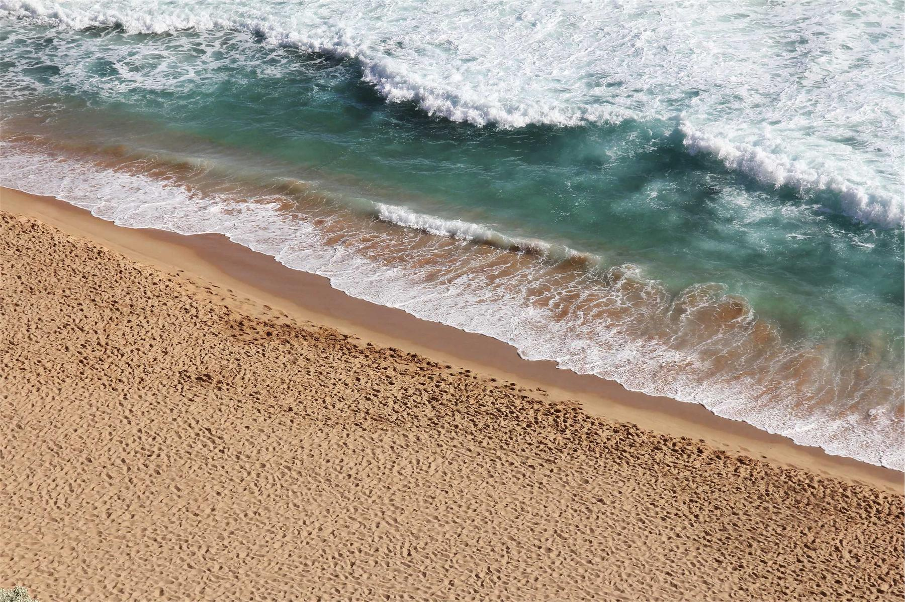

Six rooms above the harbour in Staithes
A guesthouse by the water with dinner at eight, breakfast until ten and bikes to borrow. Rooms for two from £120 a night.

The view from room four
The bay at low tide, from the window seat. Four of our six rooms face the water; ask for one when you book.

Dinner at eight. Friday and Saturday.
One menu of three courses from what the boats bring in, £38 a head. Tell us about allergies when you book.
See this week's menu